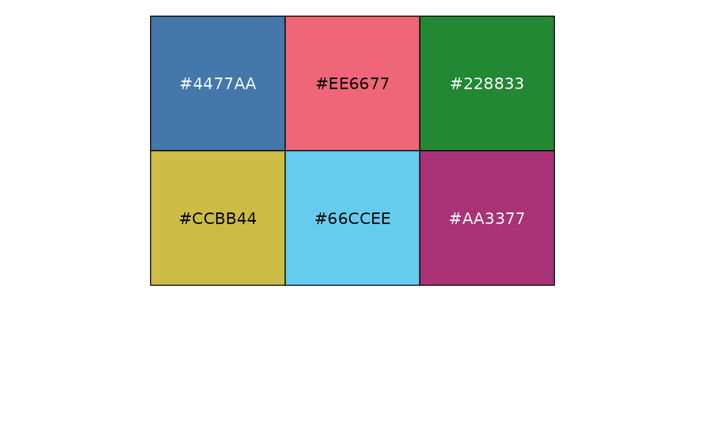
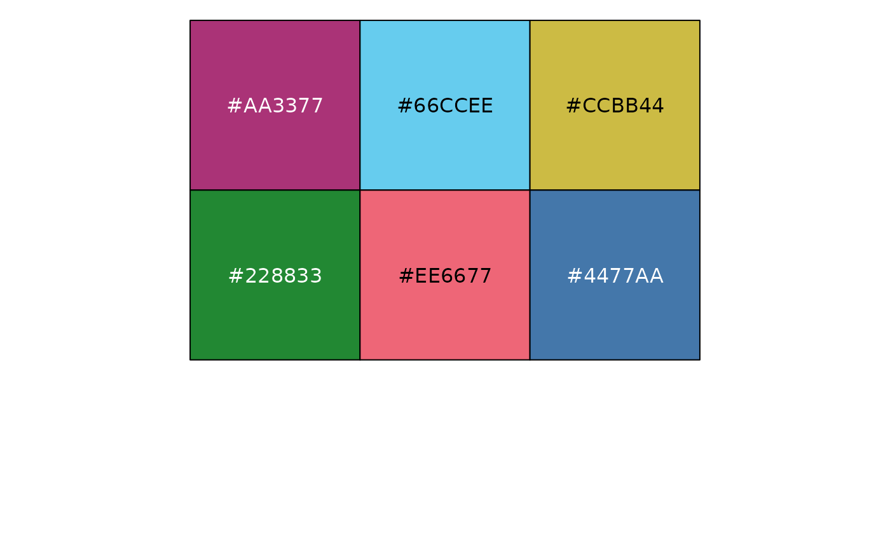
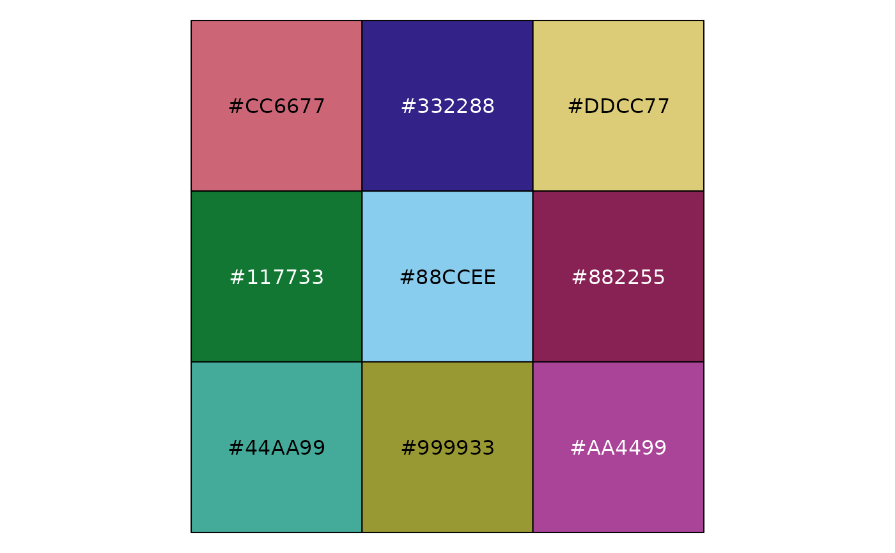
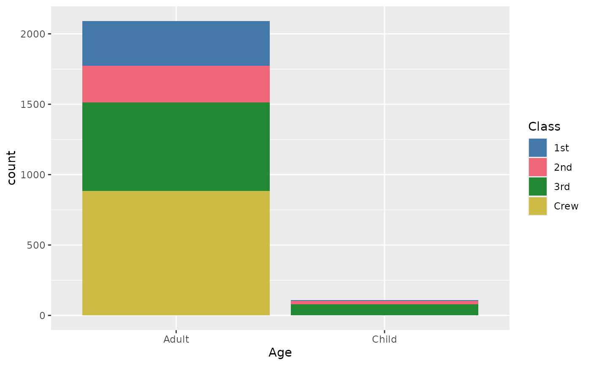
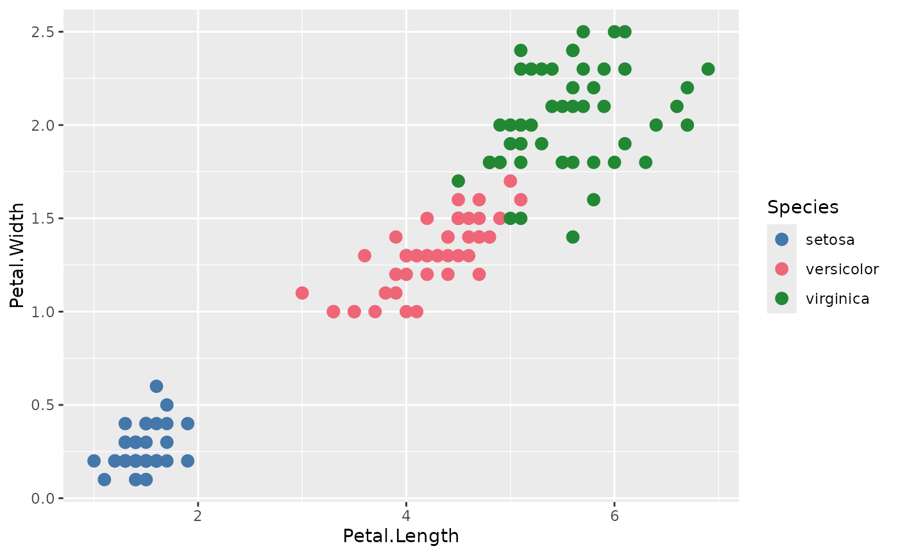
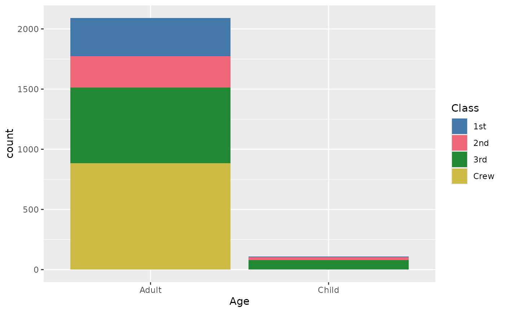
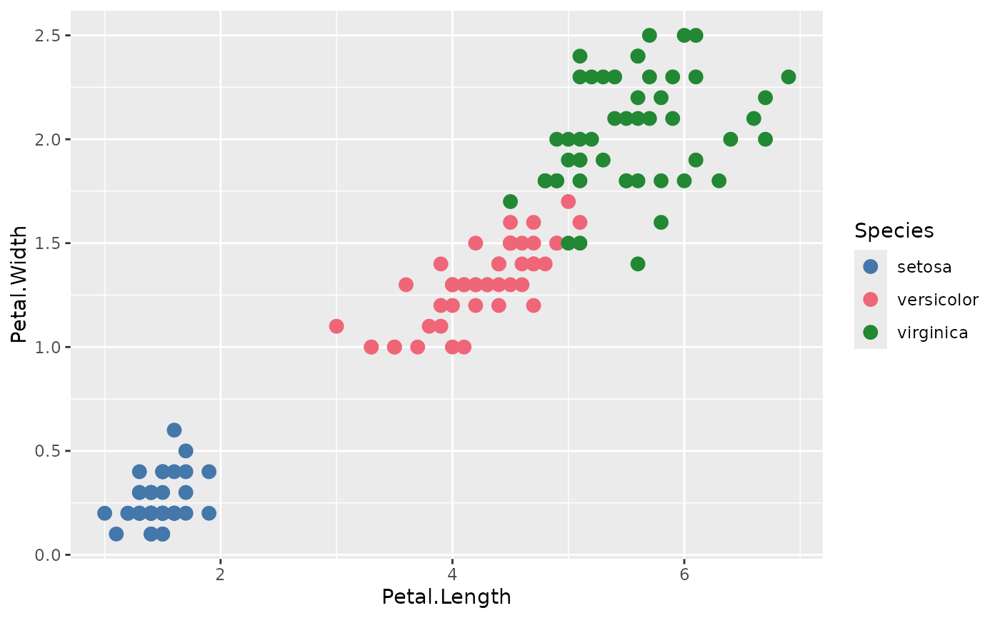

Provides a safe colour palette for categorical variable. It is based on
Paul Tol's colour schemes designed to be distinct for all people, including
colour-blind readers, distinct from black and white, distinct on screen and
paper, and matching well together. It is primarily based on the bright
colour scheme implemented in khroma::scale_fill_bright(). This colour
scheme include 7 colours, including a grey reserved for NA values.
Therefore, scale_fill_safe() use the bright scheme only if 6 or less
colours are needed (keeping the grey for any NA value). If 7 to 9 colours
are needed, the muted scheme (cf. khroma::scale_fill_muted()) is used
instead. Finally, if 10 or more colours are requested, the rainbow scheme
is used (cf. khroma::scale_fill_discreterainbow()). This is a sequential
colour scheme. Here, colour are randomly reordered to provide more contrasts
between modalities.
Usage
safe_pal(reverse = FALSE)
scale_fill_safe(
name = ggplot2::waiver(),
...,
reverse = FALSE,
aesthetics = "fill",
na.value = "#BBBBBB"
)
scale_colour_safe(
name = ggplot2::waiver(),
...,
reverse = FALSE,
aesthetics = "colour",
na.value = "#BBBBBB"
)
scale_color_safe(
name = ggplot2::waiver(),
...,
reverse = FALSE,
aesthetics = "colour",
na.value = "#BBBBBB"
)Arguments
- reverse
A logical scalar: should the resulting vector of colours be reversed?
- name
The name of the scale. Used as the axis or legend title. If
ggplot2::waiver(), the default, the name of the scale is taken from the first mapping used for that aesthetic. IfNULL, the legend title will be omitted.- ...
Other arguments passed on to
discrete_scale()to control name, limits, breaks, labels and so forth.- aesthetics
Character string or vector of character strings listing the name(s) of the aesthetic(s) that this scale works with. This can be useful, for example, to apply colour settings to the colour and fill aesthetics at the same time, via
aesthetics = c("colour", "fill").- na.value
Colour to be used for
NAvalues (if any).
Examples
scales::show_col(safe_pal()(6))

scales::show_col(safe_pal(reverse = TRUE)(6))

scales::show_col(safe_pal()(9))

scales::show_col(safe_pal()(16))
 ggplot2::ggplot(titanic) +
ggplot2::aes(x = Age, fill = Class) +
ggplot2::geom_bar() +
scale_fill_safe()

ggplot2::ggplot(iris) +
ggplot2::aes(x = Petal.Length, y = Petal.Width, colour = Species) +
ggplot2::geom_point(size = 3) +
scale_colour_safe()

ggplot2::ggplot(titanic) +
ggplot2::aes(x = Age, fill = Class) +
ggplot2::geom_bar() +
scale_fill_safe()

ggplot2::ggplot(iris) +
ggplot2::aes(x = Petal.Length, y = Petal.Width, colour = Species) +
ggplot2::geom_point(size = 3) +
scale_colour_safe()
